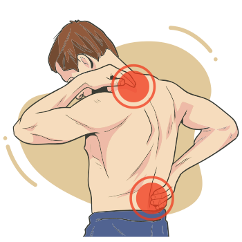

O sistema musculoesquelético é fundamental para a locomoção, assim como a realização de tarefas da vida diária, seja pessoal, seja profissional. Muitas das condições que acometem o sistema locomotor podem estar associadas a hábitos pouco saudáveis da vida pessoal ou excessos relacionados ao trabalho, com forte impacto sobre a qualidade de vida.
A partir de agora, serão apresentadas as seguintes condições de saúde, nas quais o emprego de fitoterápicos encontra respaldo na literatura científica, assim como em relatos clínicos e etnofarmacológicos, considerando que muitas das plantas citadas têm tradição de uso ancestral no controle e tratamento de inflamação:
